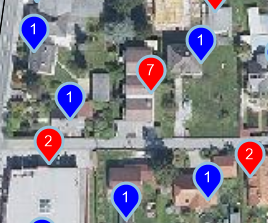
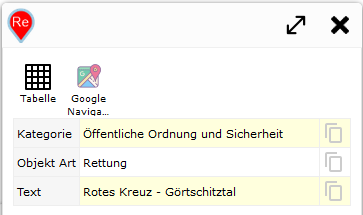
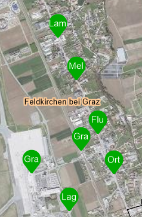

Dynamic Content¶
If dynamic content has been inserted into a map (see the MapBuilder section), the markers and results can also be customized via custom.js.
Markers¶
Customizing markers for dynamic content works analogously to query markers, via the list webgis.markerIcons[]. However, the list values here are dynamic_content and dynamic_content_extenddependent:
webgis.markerIcons["dynamic_content"]["default"]: definition of marker icons for general dynamic content. By default, markers with numbers are shown here.webgis.markerIcons["dynamic_content_extenddependent"]["default"]: for dynamic content that is reloaded whenever the map extent changes. For this,viewport-dependentmust be specified when creating the content (seeMapBuilder). By default, markers without sequential numbers are shown here. Sequential numbers, as with static dynamic content, would confuse the user here, since the numbers could change with every map pan.
If you restrict webgis.markerIcons["dynamic_content"] or webgis.markerIcons["dynamic_content_extenddependent"] with ["default"], the definition applies to all dynamic content. Instead of ["default"], the display name of the dynamic content can also be specified, e.g. webgis.markerIcons["dynamic_content_extenddependent"]["Aktuelle Baustellen"].
Note
Since a basic description of markers was already explained in the previous chapter for query results, and the approach is analogous, only practical examples are given here.
Example:
A dynamic content item shows customers as a point at their respective address. It is based on an API query. Since multiple customers can live at one address (e.g. an apartment building), Union was set for the query (see the CMS - Queries tutorial). This combines customers located at the same address point into a single object/marker. As a result, the Properties of the feature correspond to an array (instead of a general object or Record). Each entry in this object corresponds to a Record for one customer.
On the map, markers should be shown in different colors if there are multiple customers under one address. To do this, it is checked whether properties is an array. In addition, the number of customers should be shown as a number in the marker.
webgis.markerIcons["dynamic_content_extenddependent"]["Kunden"] = {
url: function (i, f) {
if (Array.isArray(f.properties) && f.properties.length > 1) { // Wenn Array mit mehreren Einträgen => roter Marker
return webgis.baseUrl + '/rest/numbermarker/' + f.properties.length + '?c=f00';
}
return webgis.baseUrl + '/rest/numbermarker/1?c=00f'; // Sonst blauer Marker
},
size: function (i, f) { return [33, 41]; },
anchor: function (i, f) { return [16, 42]; },
popupAnchor: function (i, f) { return [0, -42]; }
};
Result:

Hooks¶
hooks allow you to access the features after a dynamic content item has been loaded. The features can also be changed there. An example use case for hooks is renaming or restricting the attributes that should be shown for the dynamic content.
The following lists are available:
webgis.hooks["dynamic_content_loaded"]["default"]: a function can be specified here that processes the result of a dynamic content item (GeoJSON).webgis.hooks["dynamic_content_feature_loaded"]["default"]: a function can be defined here that processes individual features of a dynamic content item after loading.
Example:
On the map, a maximum of 100 results should be shown, even if the dynamic service returns more. The rule should only apply to the dynamic content named Solr:
webgis.hooks["dynamic_content_loaded"]["Solr"] = function (response) {
response.features = response.features.slice(0,100);
};
The same content returns a lot of attributes with names that are not user-friendly. Therefore, in the next step, only a few attributes should be adopted and given meaningful names. This is done for each feature individually:
webgis.hooks["dynamic_content_feature_loaded"]["Solr"] = function (feature) {
if (feature.properties) {
var properties = feature.properties;
feature.properties = {
Kategorie: properties.map_category || '',
"Objekt Art": properties.subtext || '',
Text: properties.textexact || '',
};
}
};
Result:

In the last step, the markers for this service should also be customized. The coloring is based on Kategorie. In addition, the marker should show Objekt Art as text. If the category is Haltestelle, the second word from Text is used as the label, since in this example it always corresponds to the name of the stop (the first word would be the town/municipality):
webgis.markerIcons["dynamic_content_extenddependent"]["Kagis Solr"] = {
url: function (i, f) {
var label = f.properties["Objekt Art"].substr(0, 2);
switch (f.properties.Kategorie) {
case 'Öffentliche Ordnung und Sicherheit':
return webgis.baseUrl + '/rest/textmarker/' + label + '?c=f00';
case 'Gesundheit':
return webgis.baseUrl + '/rest/textmarker/' + label + '?c=0f0';
case 'Soziale Einrichtung':
return webgis.baseUrl + '/rest/textmarker/' + label + '?c=00f';
case 'Haltestelle':
var words = f.properties.Text.split(' ');
return webgis.baseUrl + '/rest/textmarker/' + words[Math.min(words.length, 1)].substr(0, 3) + '?c=0a0,0a0';
}
return webgis.baseUrl + '/rest/textmarker/' + label + '?c=f0f';
},
size: function (i, f) { return [33, 41]; },
anchor: function (i, f) { return [16, 42]; },
popupAnchor: function (i, f) { return [0, -42]; }
};
Result:
